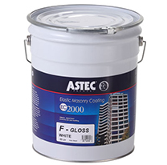

過酷な気候のオーストラリアで生まれた高性能塗料「アステック」
「アステック」は、紫外線が日本の3倍以上あるなど厳しい自然環境に置かれているオーストラリアで生まれた、高性能な外壁・屋根塗料です。耐久性・伸縮性・遮熱性・防カビ性といった性能に優れており、住まいを長持ちさせる力を持っているため、日本の外壁塗装業界でも注目を集めています。
アステックの特徴

- 高耐久性
- 高い防水性
- 高い防カビ性
- 遮熱性
1.耐用年数15～20年の高耐久性
一般にアクリル塗料は耐久性が低いと言われていますが、それはコスト削減のために添加剤を多く含んでいるからでした。アステックは不純物が一切含まれていないピュアアクリルを使用することで、紫外線の非常に強いオーストラリアでも15年から20年の耐久性を実現しています。
一般的な塗料は、塗装から7～8年すると触れたときに手に付着する「チョーキング現象」が起きるようになりますが、アステックでは同時期でもそのような現象は起きません。
2.伸縮率600％で実現する高い防水性・防カビ性
外壁塗料は、乾いたときにある程度の伸縮性が求められます。伸縮性がないとすぐにヒビ割れが表面化してしまうため、壁や屋根の内部に水分が侵入するようになってしまうのです。建物の内部に水分が侵入するとカビや腐食の原因となり、建物の寿命が大幅に削られてしまいます。住まいを長持ちさせるためには、塗料の伸縮性は極めて重要なのです。
従来の塗料は塗料の伸縮性を保つために「可塑剤（かそざい）」と呼ばれる添加剤を混ぜていましたが、これは3～5年で塗膜から蒸発してしまいます。一方、アステックペイントは、「可塑剤」を使用せず、ピュアアクリルの分子組み換えによって樹脂そのものの弾性を保つことに成功しました。これにより、国内メーカーのフッ素塗料やシリコン塗料並の耐久性・伸縮性が実現されています。
3.遮熱性
アステックには微細なセラミック粒子が含まれており、太陽光を反射することで屋根や壁が熱されることを防ぎます。一般に、アステックによって家の表面温度は20～30℃下がり、室内温度は3～10℃下がると言われています。室温が1℃下がると光熱費が10％削減できると言われているので、快適性と経済性を両立させることが可能です。
アステックの施工事例
西東京を中心に、高い技術力で確かな外壁塗装を行っている株式会社 幸成では、アステックを使った施工実績が数多くございます。アステックは塗装に技術力が要求される塗料です。興味がおありでしたら、経験豊富な当社までお気軽にご相談ください。


- 地域名が入ります イニシャル
- コメントが入ります。コメントが入ります。コメントが入ります。コメントが入ります。コメントが入ります。コメントが入ります。コメントが入ります。コメントが入ります。コメントが入ります。コメントが入ります。コメントが入ります。コメントが入ります。コメントが入ります。
- 地域名が入ります イニシャル
- コメントが入ります。コメントが入ります。コメントが入ります。コメントが入ります。コメントが入ります。コメントが入ります。コメントが入ります。コメントが入ります。コメントが入ります。コメントが入ります。コメントが入ります。コメントが入ります。コメントが入ります。